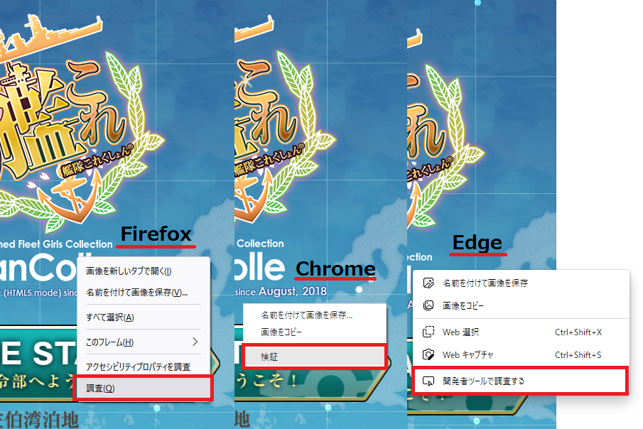
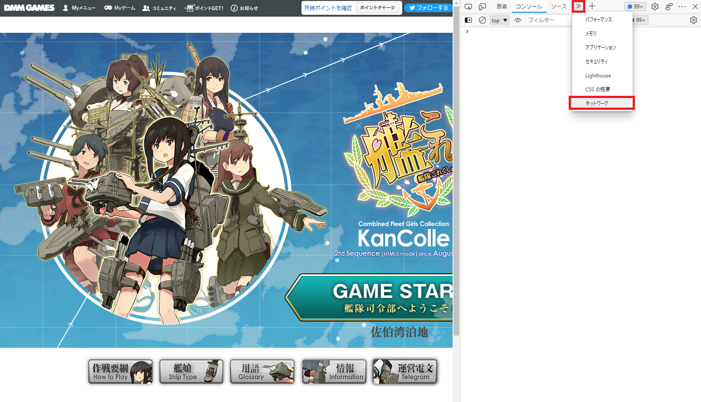
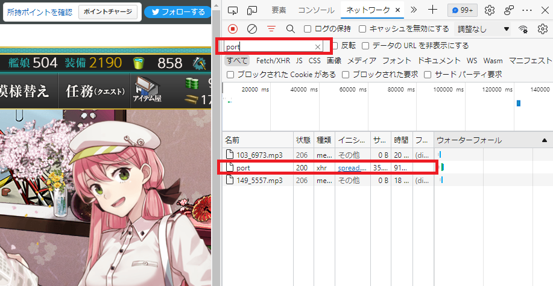
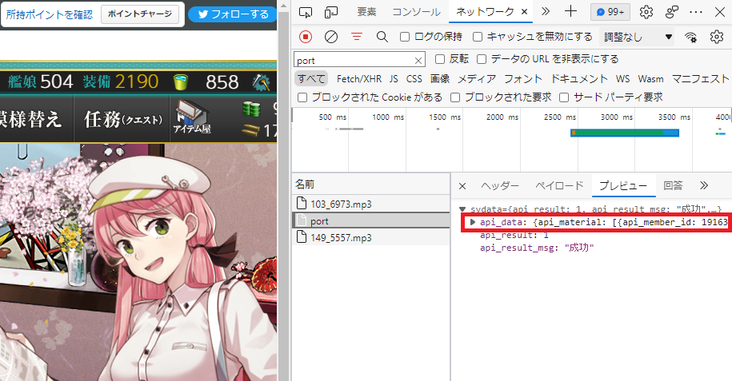
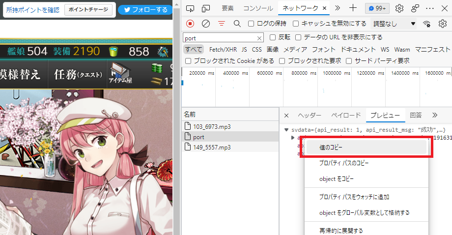
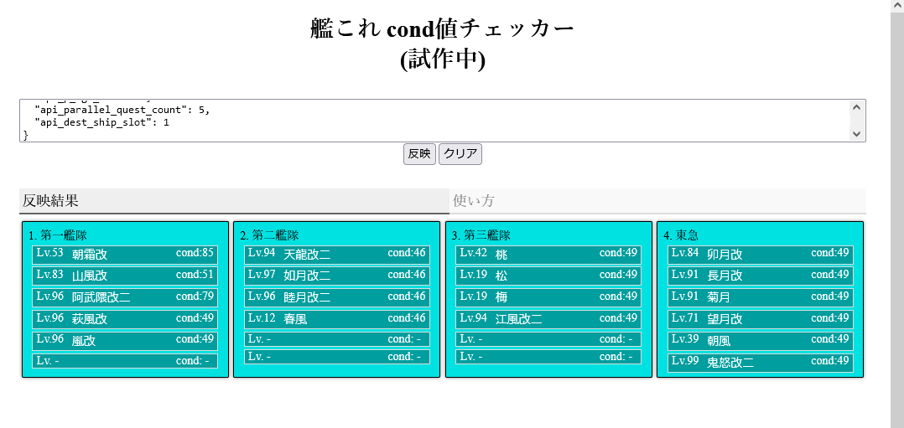

艦これ cond値 確認ツール
第1～第4艦隊に編成してある艦娘のcond値を確認できます。
1.ブラウザで艦これを起動し開発者ツールを開きます。
開発者ツールは、画面上で右クリックして '調査' や '検証' と書かれたヤツを選択orショートカットキー『Ctrl+Shift+i』で開けます
(画像はFirefox googleChrome Edgeの例、その他ブラウザについては)

2.開発者ツールのネットワークタブを開いてください。

3.開発者ツールを開いた状態で「艦これ」内で母港画面に移動してください、読み込まれたデータが表示されていきます。
(既に母港が表示されている場合は一度「出撃」などを選択し、別画面へ移動してから再び母港へ戻ってきてください。新しく読み込まれるはずです)
一覧から「port」と書かれたものを探して選択してください。フィルタ機能で絞り込むと見つけやすいです。

4.portを選択したら右側にプレビューが表示されます、その中から"api_data"と書かれた部分を見つけてください。
ここに格納されたデータがcond値の取得に必要となります。

5.プレビュー上の"api_data"にカーソルを重ねて右クリックして「値をコピー」してください。

6.ページトップに戻ってコピーしたデータをテキストボックスに貼り付けます。
この状態で"反映"をクリックすれば艦隊のcond値が表示されます。
